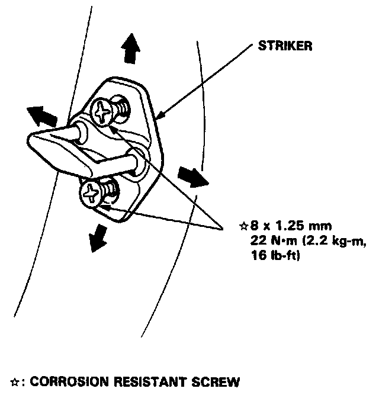

Front Door Striker: Adjustments
DOOR STRIKER ADJUSTMENT
Make sure the door latches securely without slamming. If it needs adjustment:
1. Draw a line around the striker plate for reference.

2. Loosen the striker screws and move the striker IN or OUT to make the latch fit tighter or looser. Move the striker UP or DOWN to align it with the latch opening. Then lightly tighten the screws and recheck.
NOTE:
- Hold the outside handle out and push the door against the body to be sure the striker allows a flush fit.
- Do not tap the striker with a metal hammer to adjust the position.
3. If the door latches properly, tighten the screws and recheck.
NOTE: Replace the striker if it is cracked.